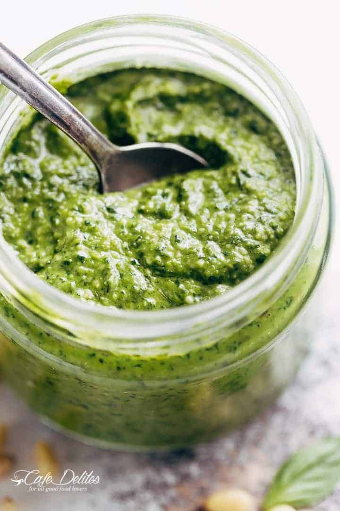

Pesto

Description
Basic pesto, made with basil, olive oil, pine nuts, and Parmesan cheese. This recipe differs from the classic preparation by the addition of parsley. You can add a little extra Parmesan to the mixture if you like.
Ingredients
- 3 cups packed fresh basil leaves
- 4 cloves garlic
- 3/4 cup grated Parmesan cheese
- 1/2 cup olive oil
- 1/4 cup pine nuts
- 1/2 cup chopped fresh parsley
Steps
- Combine basil, garlic, Parmesan cheese, olive oil, and nuts in the bowl of a food processor or blender. Blend to a smooth paste.
- Add parsley if desired.